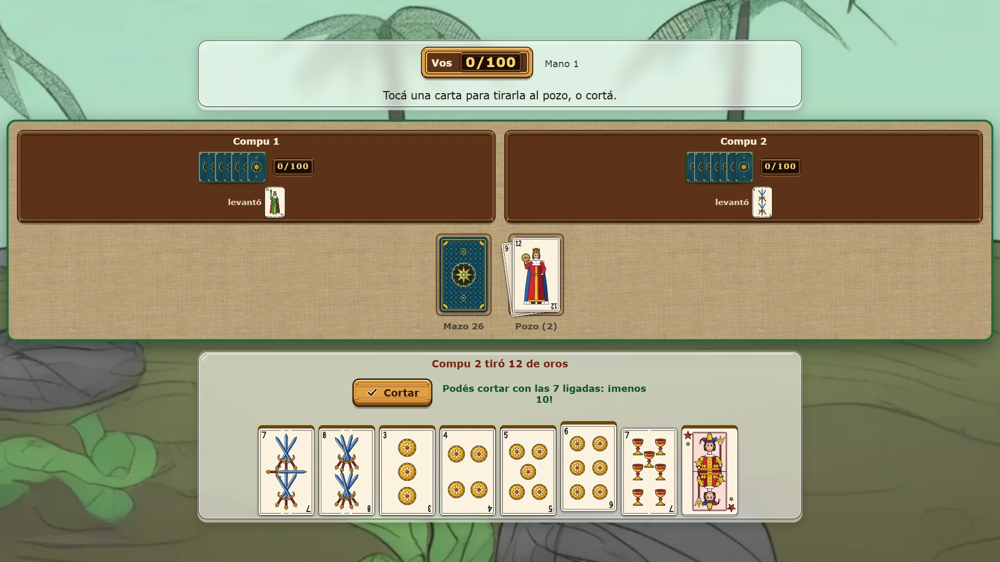
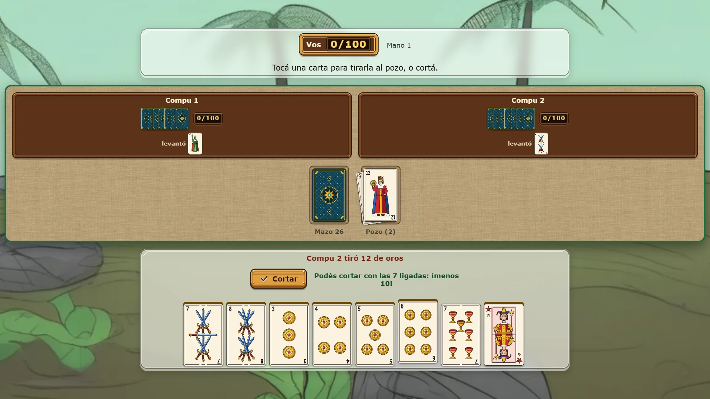
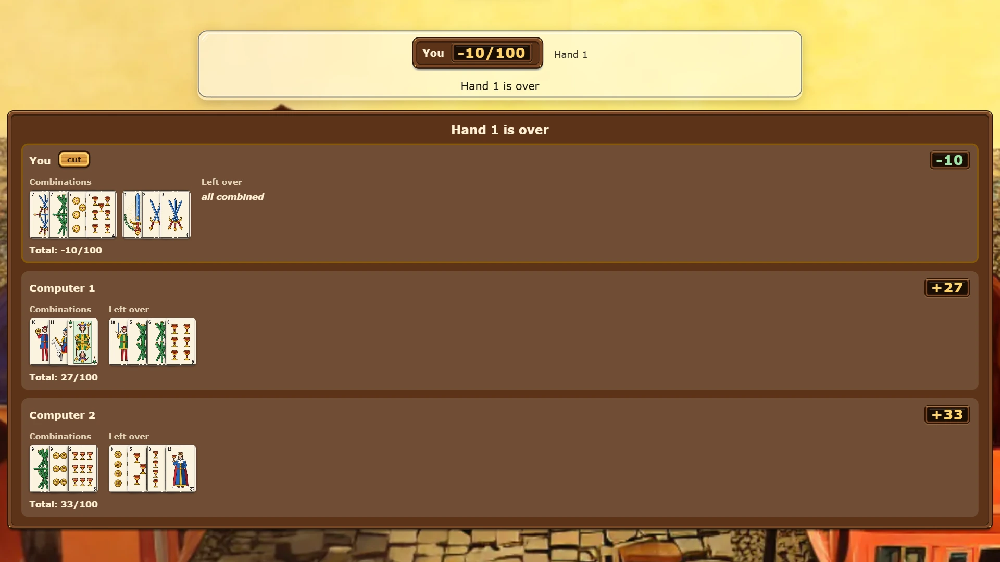

Congawise — play conga online free
Conga is the card game of Uruguay, played at the beach every summer and at every family table with the 50-card Spanish deck. Build escaleras and piernas, cut when what is left over adds up to 5 or less, and stay under 100 points. Play the computer at three levels, or invite friends to a room.


How to play conga
Conga, the card game, uses the Spanish deck of 50: the numbers 1 to 12 in swords, clubs, coins and cups, and two comodines (jokers). Two to four people play, each for themselves. Everybody gets seven cards, and one more card turned up starts the pile.
On your turn you take a card, the top of the stock or the top of the pile, and then throw one on the pile, so you always hold seven. Or, instead of throwing it, you cut and the hand ends.
Escaleras, piernas and the comodin
An escalera is three or more cards of the same suit in a row, like the 4, 5 and 6 of coins. The 1 is low and the 12 is high, and an escalera never turns the corner from 12 to 1. A pierna is three or four cards of the same number, like three 7s.
A comodin stands in for any card, but a combination may hold only one, and it needs at least two real cards beside it. A comodin left loose in your hand costs 50 points.
Cutting
After taking a card you hold eight. You may cut when you can put one face down and, of the other seven, what is not in an escalera or a pierna adds up to 5 points or less. The cards left over score against you: a card is worth its number. Cut with all seven combined and you score -10. Nobody may cut holding both comodines.
All seven in one escalera of one suit, without a comodin, is a conga: it wins the whole game at once.
Ligar: laying off on the cut
When somebody cuts, every other player shows their combinations and may ligar their loose cards onto the cutter's: a card that extends one of the cutter's escaleras, or the fourth card of a pierna. Whatever is still loose after that is added to their score. Here the cards are shown at their best for you, so nobody loses points by laying them out badly.
Points: over 100 and you are out
Points pile up hand after hand, and low is good. A player who goes over 100 is out of the game, and the last player still in wins. With the optional reenganche a player who goes out may come back in once, on the highest score still in play, as long as two others are still playing. When the stock runs out, the pile under its top card is shuffled into a new stock.
Two ways to play
Against the computer you choose two, three or four players and one of three levels. Easy takes the pile only when the card fits at once. Medium weighs every card for what it could become. Hard also keeps track of the cards out of play and will not throw the next player a card it was seen collecting.
Friend online opens a room for two to four players. Send the link, or read out the six-letter code; the computer plays any chair nobody has taken. The host deals, and each player only ever receives their own cards: the other hands and the stock stay hidden. Friends can also watch a game live from a watch link. Nobody needs an account.
Tips for winning
Get rid of high loose cards early: a 12 nobody combines is 12 points against you. Keep two cards that could become an escalera rather than a lone high card, take from the pile only when the card fits, and watch what the next player picks up before you throw a card next to it. Cutting early with 4 or 5 left over often beats waiting for -10.
More card and board games
For another card game from the River Plate, try Trucowise, with Argentine and Uruguayan truco. For a card game in teams, try Buracowise (Brazilian buraco). For a two-player board game, try Gomowise (Gomoku, five in a row).
More like this: 2-player games online · Multiplayer browser games